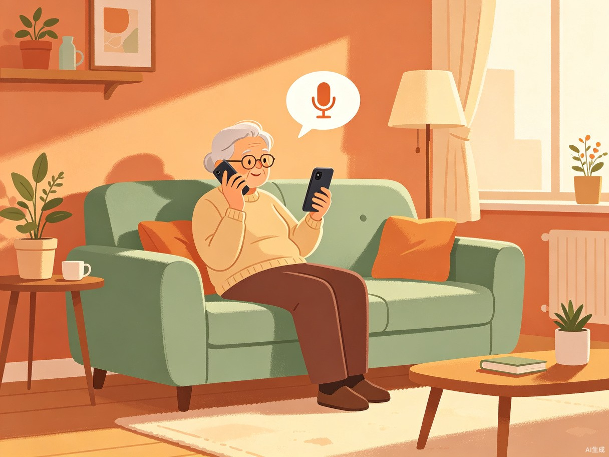
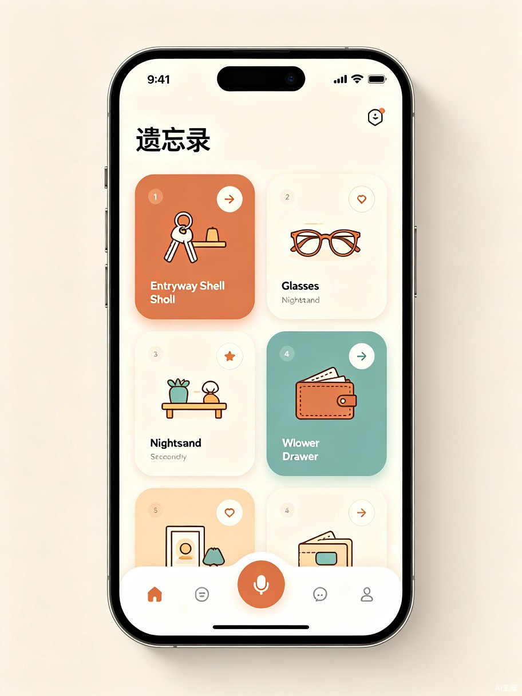

01 / OVERVIEW创意概述
遗忘录是一款基于 AI 语音识别与自然语言处理的物品位置记忆助手。 用户只需对着手机说一句"我把钥匙放在玄关鞋柜第二层了"，APP 便会自动识别语音、提取物品与位置信息、归类存储， 并在用户日后询问"钥匙在哪"时，即时播报答案。
它就像一个永远不会忘记的私人图书管理员，为你家里的每一件物品建立位置档案。 无论是钥匙、眼镜、身份证，还是季节性收纳的冬被、节日装饰，录入一次，随时可查。 对于记忆力逐渐衰退的老年人而言，它更是一位贴心的生活伴侣，让"东西放哪了"不再成为日常焦虑的来源。
02 / PROBLEM问题与痛点
几乎每个人都有过这样的经历：明明刚才还拿在手里的东西，转头就忘了放在哪里；或者上周特意收好的重要文件， 这周要用时翻遍全家也找不到。这种"日常性遗忘"看似小事，却实实在在地消耗着我们的时间与精力。
反复寻找
平均每人每周花费 15-30 分钟寻找家中 misplaced 物品，累计一年超过 26 小时。
情绪消耗
"找不到"带来的焦虑和挫败感影响日常生活心情，尤其赶时间时更为突出。
老年困境
老年人记忆力衰退，频繁遗忘物品位置成为生活痛点，也增加了家属的担忧。
这个创意源于切身经历 —— 我常常随手放下某样东西，过段时间就忘记放在了哪里，然后在屋子里翻箱倒柜地寻找， 非常浪费时间和精力。周围的朋友、家人也都有同样的困扰。而现有的备忘录、便签类工具操作繁琐， 需要手动打字记录，无法做到"说完即记"的流畅体验。
03 / CONCEPT产品理念
遗忘录的核心理念是"说出来，就记住了"。我们用 AI 语音技术抹平了"记录"这一动作的摩擦力 —— 你不需要打开笔记、选择分类、手动输入，只需要像跟家人说话一样，自然地说出物品和位置，其余交给 AI。
一句话完成记录
全程语音交互
不限量存储管理
产品定位为轻量级生活工具，不追求大而全的家庭管理，而是聚焦于"物品 + 位置"这一高频刚需场景， 做到极致简单、极度可靠。交互逻辑遵循三步法则：录入 → 归纳 → 查询， 老人小孩都能零门槛上手。
04 / FEATURES核心功能
围绕"记录 — 管理 — 查询"三大环节，遗忘录提供四大核心功能模块：
🎙️ 语音录入
长按录音按钮，自然说出"我把XX放在XX了"，AI 自动识别语音内容。支持连续录入，无需逐条操作。 语音交互对老年人尤为友好，无需打字。
🧠 智能归纳
基于 NLP 自然语言处理，自动从语音文本中提取"物品名称"和"存放位置"，智能匹配预录入的位置库 （如家里、公司），自动归类整理，生成结构化记录。
📋 物品管理
APP 首页以卡片列表展示所有物品及其位置，支持按位置筛选、按时间排序、关键词搜索。 物品状态可标记"已取走/在原位"，位置变更自动更新。
🔊 语音查询播报
直接问"我的眼镜在哪？"，APP 语音播报答案"你的眼镜在卧室床头柜上"。 支持模糊匹配，说"钥匙"即可找到所有钥匙相关记录。
用户使用流程
flowchart LR
A["🎙️ 语音输入\n'钥匙放在玄关了'"] --> B["🧠 AI 语音识别\nASR 转文字"]
B --> C["📝 NLP 语义分析\n提取物品+位置"]
C --> D["🗂️ 自动归类\n存入位置库"]
D --> E["✅ 记录完成"]
F["❓ 语音提问\n'钥匙在哪？'"] --> G["🔍 语义匹配\n检索数据库"]
G --> H["🔊 语音播报\n'钥匙在玄关鞋柜上'"]
05 / USERS目标用户与使用场景
核心用户群体
银发族用户
primary_target记忆力逐渐衰退的老年人是核心受益群体。语音交互无需打字，大字版界面清晰易读， 让他们不再因遗忘而焦虑，也让子女更安心。
忙碌上班族
secondary_target生活节奏快、物品多的都市白领。随手放东西后容易忘记，需要快速记录和查询， 节省寻找时间，提升生活效率。
典型使用场景
-
1
日常归家随手放置
下班回家，随手把钥匙、钱包、工牌放在不同位置。说一句"工牌放在书桌抽屉了"，秒级完成记录。
-
2
季节性物品收纳
换季时把冬被、电暖器收进储物间。录入"冬被在阳台储物柜顶层"，半年后一键查询，无需翻找。
-
3
重要证件保管
护照、房产证等不常用但重要物品，收纳后录入位置。需要时语音询问，立刻获得准确答案。
-
4
老年人日常辅助
老人把老花镜、药品放在各处。子女远程帮老人录入，或老人自行语音记录，随时查询不再求助。

06 / VALUE价值与意义
从"翻箱倒柜"到"一句话搞定"
遗忘录就像一个个人物品图书管理系统，精确标注每件东西的位置。 将平均寻找时间从 15 分钟缩短至 3 秒，每年为用户节省超过 26 小时的无意义寻找时间。 更重要的是消除了"找不到"带来的焦虑情绪，让生活更从容。
让老年人生活更有尊严
对记忆力衰退的老年人而言，遗忘录不只是一个工具，更是一份生活尊严的守护。 不再因频繁找不到东西而自责，不再事事依赖子女。语音交互的零门槛设计让银发族也能享受科技便利， 真正实现科技适老化。
虽然需求看似"小众"，但物品遗忘是全人类的共性痛点。以中国 2.8 亿老年人口为基本盘， 叠加庞大的上班族群体，市场空间可观。产品可采用"基础功能免费 + 高级功能订阅"模式， 并可延伸至智能家居联动、家庭共享管理等增值场景，具备清晰的商业化路径。
07 / TECH技术实现方案
遗忘录的技术核心在于语音识别（ASR）与自然语言处理（NLP）两大 AI 能力的结合。 以下是技术架构概览：
flowchart TB
subgraph Client["📱 客户端 APP"]
UI["界面展示层"]
VoiceIn["语音录入模块"]
VoiceOut["语音播报模块"]
end
subgraph Cloud["☁️ AI 服务层"]
ASR["语音识别引擎\nASR"]
NLP["自然语言处理\n物品/位置提取"]
Search["语义检索引擎"]
TTS["语音合成\nTTS"]
end
subgraph Data["💾 数据层"]
DB[("物品位置数据库")]
LocLib["位置库管理"]
end
VoiceIn --> ASR
ASR --> NLP
NLP --> LocLib
NLP --> DB
VoiceIn --> Search
Search --> DB
Search --> TTS
TTS --> VoiceOut
DB --> UI
关键技术模块
| 模块 | 技术方案 | 说明 |
|---|---|---|
| 语音识别 | ASR 引擎 | 将用户语音实时转为文字，支持中文方言识别，准确率目标 95%+ |
| 语义提取 | NLP 实体识别 | 从自然语句中提取"物品"和"位置"两类实体，理解"把A放在B"等句式 |
| 位置管理 | 预录入位置库 | 用户预先录入常用位置（家里、公司），系统自动匹配归属 |
| 智能检索 | 语义匹配算法 | 支持模糊查询，"钥匙"可匹配"车钥匙""门钥匙"等相关记录 |
| 语音播报 | TTS 语音合成 | 将查询结果转为自然语音播报，解放双手，尤其适合老年用户 |
| 数据存储 | 云端 + 本地双存储 | 云端同步支持多设备，本地缓存保障离线可用 |
08 / PREVIEW产品界面预览
APP 界面遵循极简适老设计原则：大字号、高对比度、大触摸区域、语音优先交互。 首页以卡片列表直观展示物品与位置，底部固定的语音按钮是核心操作入口。

界面核心区域包括：顶部位置切换栏（家里 / 公司 / 自定义）、 物品卡片列表（展示物品名称、位置、录入时间）、 底部语音按钮（长按录音，松开自动识别）。 整体配色采用温暖的大地色系，传递安心、可靠的产品气质。
09 / ROADMAP未来展望
遗忘录的成长规划分为三个阶段，从核心功能打磨到生态扩展：
核心功能上线
完成语音录入、智能归纳、物品管理、语音查询四大核心功能。支持单用户、单设备使用， 聚焦"家里"场景，验证产品核心价值。
家庭共享与多场景
支持家庭账号共享，子女可远程帮老人管理物品位置。扩展位置库至公司、车内、储物间等多场景。 增加物品过期提醒、定期整理建议等智能功能。
智能家居联动
接入智能家居生态，与智能音箱联动实现全屋语音查询。探索 AR 物品标注、智能标签硬件等方向， 打造"物品数字孪生"的完整解决方案。
生活中最困扰我们的，往往不是什么大问题，而是那些反复发生却始终没有被解决的小痛点。 "东西放哪了"就是这样一个被忽视的日常困境。遗忘录或许不是最炫酷的 AI 应用， 但它真实、温暖、有用 —— 这正是技术应该有的样子。